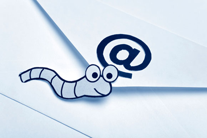
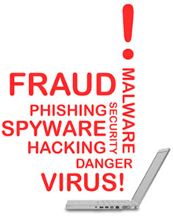

De maneira bem simples um vírus de computador pode ser comparado com um vírus biológico comum que possui como característica básica procurar um hospedeiro, se instalar e aproveitar dos recursos para garantir a sua sobrevivência. Alguns vírus, após se instalarem na sua vitima, acabam imediatamente com os recursos dela e, por consequência, acabam morrendo com as suas vitimas. No entanto, existem outros tipos de vírus que, depois de se instalarem de forma a perpetuar a sua espécie, fazem cópias de si mesmos e tentam se transmitir para outros hospedeiros sadios, como o vírus da AIDS, que não mata o seu hospedeiro de imediato, mas, sim, depois de um determinado tempo.
Da mesma forma que um vírus biológico, o vírus de computador procura agir da mesma forma, só que nesse caso um vírus de computador é um programa que geralmente é criado com duas intenções básicas: anexa-se aos códigos de outros programas para poder depois se disseminar e atacar outros.
O vírus de computador possui a característica de ser autorreplicante e pode trazer uma série de transtornos à operação do sistema de computador, como:
- Diminuição do desempenho do micro, seja por sobrecarga na memória do micro, seja pela utilização excessiva de espaço do HD do usuário.
- Alteração, sem consentimento do usuário, do conteúdo de alguns arquivos armazenados dentro dos computadores.
- Exclusão de arquivos armazenados dentro do Hard Disk do usuário.
- Exibição de mensagens indesejáveis na tela do computador (piadas, imagens etc.).
- Mudança de paginas do Browser.
- Capturas de teclas que são digitadas pelo usuário.
- Executar uma série de operações que não foram fornecidas por parte do usuário.
- Abrir algumas portas de comunicação que podem permitir o acesso de pessoas, de forma externa, da rede do usuário na máquina e sem a sua autorização.
- Reproduzir-se de maneira ilimitada com o objetivo de degradar determinados recursos do sistema.
- Infectar muitos computadores e causar sua indisponibilidade temporária ou permanente.
- Ler os e-mails que estiverem na máquina atacada, bem como ver todas as senhas dessa máquina.
- Reiniciar a máquina e também fazer uma conexão via rede em outras máquinas às quais aquela máquina tinha acesso.
- Executar programas que estiverem dentro do computador.
Como os vírus chegam às redes da empresa
No passado, a forma mais comum de os computadores serem contaminados era por meio da utilização dos disquetes, em que um funcionário chegava com um disquete trazido da sua casa. Ao colocar esse disquete no computador da empresa, se ela não tivesse um antivírus, teria seus computadores contaminados e cada computador que entrava em contato com este também acabava sendo infectado. Que saudade dessa época, pois a quantidade de vírus era muito pequena, e os controles a serem implementados, apesar de rudimentares e extremos, eram bastante eficientes. A chegada das redes locais e a facilidade de conexão dos computadores entre si, bem como o surgimento da ferramenta de correio eletrônico com a internet, fizeram esse cenário mudar radicalmente, pois, agora, além de controlar os disquetes que entravam na empresa, era necessário controlar outros tipos de mídias e acessos que poderiam permitir a entrada dos vírus dentro das redes das empresas.
Também, nessa época, o surgimento do Office 95 e a possibilidade da utilização de macros, que nada mais do que uma ação que pode ser automatizada para a realização de uma tarefa especifica dentro do pacote Office, permitiu que os crackers e criadores de vírus, além das ações normais do pacote de aplicativo, pudessem alterar o código para executar uma ação que o usuário não estava esperando e, nesse cenário, se popularizou nas redes os vírus de macro.
Os usuários utilizavam a internet e faziam downloads de programas que aparentemente eram inofensivos, porém traziam junto a ele um código malicioso que fazia algumas ações contra o ambiente da empresa.
Geralmente os arquivos baixados eram do tipo executáveis (exe.; .bat e com) e acabavam por infectar o computador que os recebia.
Essa vulnerabilidade do ambiente acontecia em virtude de dois problemas: um deles estava relacionado ao próprio usuário, que, só pelo fato de receber esses tipos de arquivo de pessoas que ele conhecia, acabava executando-o de forma totalmente insegura, apenas clicando e executando o arquivo bonitinho que recebeu do seu amigo. Os criadores de vírus, sabendo dessa forma de pensar dos usuários, começaram a criar truques que estavam relacionados ao fato de o cracker enviar um arquivo para ser executado no computador do usuário a partir de um endereço de alguém que ele conhecia. Outro problema estava relacionado à falta de uma política de softwares/gerenciamento de usuários dentro da empresa, que permite ao usuário estar dentro do grupo de administrador da máquina dele e com isso conseguir instalar qualquer software. Nesse caso, quem fará a instalação será o próprio vírus que acessará as áreas do computador, sendo que ele não deveria ter permissão, mas consegue, pois o usuário está no grupo de administrador da máquina.
Alguns vírus famosos
Vírus Melissa
Tratava-se de um vírus que tinha como característica a autorreplicação, ou seja, esse tipo de vírus se espalhava rapidamente por meio das mensagens de e-mail que povoavam as redes das organizações. Fazia os destinatários abrirem um documento com uma mensagem de e-mail sugestiva, como "aqui está o documento que você pediu, não o mostre para mais ninguém". Como o ser humano é curioso por natureza, e a vontade de dar aquela espiadela é irresistível, acabavam por abrir o arquivo e liberar o vírus que passava a fazer cópias de si mesmo e era enviado para as 50 primeiras pessoas da lista de contato do usuário. Dessa forma, o vírus chegava ao destino com o nome do remetente válido, fazia a pessoa que recebeu o arquivo abrir o e-mail, pois conhecia o seu emissor.
Vírus I Love You
Diferente um pouco do vírus Melissa, esse novo tipo de ameaça veio na forma de um worm e agia de forma independente, sem a necessidade de um hospedeiro. Ele foi batizado com o nome de I LOVE YOU – bem sugestivo não? Quem não gosta de receber uma cantada e, ainda mais, escutar um elogio feito por alguém misterioso? Isso atiça ainda mais a curiosidade.
Esse tipo de vírus fazia uma cópia de si mesmo várias vezes e as escondia em diversas pastas dentro do disco rígido. Também acrescentava novos códigos dentro das chaves de registro do sistema operacional da sua vítima.
Vírus Nimda
Um vírus que agiu de forma especifica dentro do ambiente da internet foi o Nimda, que possuía esse nome para lembrar o principal, por aplicar a segurança no ambiente do computador, ou seja, o Administrador da Rede. Nimda é ADMIN, abreviatura de administrador, escrito de trás para frente. Seus principais alvos foram os servidores, que eram responsáveis pela internet. Apesar de poder também infectar um computador comum, o seu real propósito era tornar o tráfego da web o mais lento possível atacando os seus principais servidores.
Vírus Code Red e Code Red II
Estes dois worms, Code Red e o Code Red II, surgiram no verão de 2001 e exploravam a vulnerabilidade do sistema operacional encontrada em máquinas com o sistema operacional Windows 2000 e o Windows NT. A vulnerabilidade explorada era um problema que existia nesses sistemas operacionais relacionada à sobrecarga do buffer.
Algumas definições
Vírus de boot
Este tipo de vírus tem como característica principal fazer a infecção na área de inicialização dos antigos disquetes, bem como dos HDs, CDs, DVDs, pen drivers. Qualquer um desses elementos citados anteriormente possui um setor que é sempre lido primeiro pelo sistema operacional quando o computador o acessa. Esse local é conhecido como a área de inicialização, em que são carregados os arquivos iniciais, os quais informam como o sistema operacional (SO) deve agir. O vírus de boot se aloja exatamente nesse setor e espera que o computador o acesse para ser carregado e, assim, passa a ser executado pelo computador.
Esse tipo de vírus costuma ter alto poder de destruição, impedindo, inclusive, que o usuário consiga se logar no micro e acessar os seus arquivos.
Trojan
A palavra Trojan está relacionada ao cavalo de Troia, que é uma alusão ao que aconteceu na Guerra de Troia, em que foram colocados soldados escondidos dentro de um cavalo de madeira e esse "presente" foi fornecido para os inimigos. À noite, quando a vigilância era menor, os soldados saíram de dentro do cavalo e atacaram a cidade. Da mesma forma os trojans têm como característica ficarem escondidos dentro de programas que aparentemente são inofensivos, porém trazem embutidos dentro de si outros programas (o vírus propriamente dito). Geralmente, o programa no qual ele fica escondido é um utilitário que o usuário acha que o ajudará, quando, na realidade, a outra parte do programa está colocando o código malicioso dentro do micro, para posteriormente efetuar o ataque.
Worm
Possui como característica principal a capacidade de não necessitar de um programa hospedeiro. É autossuficiente e tem alto poder de propagação pela rede dos computadores. É um tipo de vírus que se dissemina fazendo cópias funcionais de si mesmo e repassando-as para outros sistemas.
Hoax
Na realidade o Hoax não é um vírus, mas, sim, aproveita a curiosidade dos usuários para que eles mesmos façam a ação danosa em seu micro ou de outro usuário. Geralmente esse tipo de vírus se propaga por meio de mensagens pela internet solicitando que o usuário faça algo no seu micro. Um exemplo clássico desse tipo de vírus é um Hoax que circulou na internet informando que existia um tipo de vírus que nenhum antivírus conseguiria detectar e, se sua maquina estivesse infectada, você poderia saber, pois havia um arquivo com a foto de um urso dentro de determinado diretório. Para resolver o problema, a mensagem informava que bastaria apenas apagar esse arquivo e a ação dele não teria efeito, pois necessitaria dele para funcionar. Na realidade, esse era um arquivo do sistema operacional utilizado pelo sistema durante o processo de logon do usuário.
Dessa forma, sem a utilização de código algum, o vírus poderia fazer a sua função, que era deixar a máquina indisponível para o usuário.
Vírus de macro
Este tipo de vírus aproveita a facilidade da utilização dessa função dentro dos arquivos feitos pelo Word e pelo Excel para contaminar o computador alvo por meio de ações que são executadas automaticamente por seus macros. A facilidade do "macro" permite que uma sequência de comandos possa ser executada de forma automática, sem que haja a necessidade da interação do usuário com o programa. Por meio dessa facilidade o vírus do "macro" se aproveita para executar comandos dos quais ele necessita para obter informações do computador, bem como realizar alguma atividade maliciosa.
Antivírus
Um programa antivírus atua como uma espécie de vacina eletrônica que deve ser aplicada aos programas do computador. Tem a função de analisar todos os arquivos que forem selecionados, em busca de algum código estranho que chega ou sai por meio das ferramentas de e-mail, CDs, DVDs, pen drivers, ou pela rede do computador.
A maioria desses programas de antivírus identifica o vírus eletrônico por meio da comparação entre o arquivo que chegou e uma biblioteca de informações, a qual mantém, armazenada e junto ao seu programa, a forma de agir e as assinaturas de vários tipos de vírus. Dependendo do tipo de antivírus e da sua configuração, diversas ações, como bloquear o arquivo, colocar o arquivo em quarentena, apagá-lo, rodá-lo em uma área especifica separada dos outros programas, entre outras ações, poderão ser feitas.
Assinaturas dos vírus
Como os antivírus detectam os vírus de computador? Essa é uma pergunta que pode ser explicada por meio do conceito da assinatura do vírus, ou seja, a sua marca. Cada vírus deixa no programa infectado uma sequência de caracteres que representam o vírus propriamente dito. Por meio dessa sequência de caracteres os programas de antivírus conseguem identificar os arquivos contaminados.
Os malwares
Outra categoria de vírus é conhecida como os malwares, que na realidade representam uma coletânea de programas que agem de forma maliciosa tentando obter informações dos usuários, sem que eles saibam que essa ação está sendo feita. Esses malwares vêm com diversos tipos de programas que são distribuídos de forma gratuita dentro da internet e que acabam atraindo os usuários para instalá-los.
- Spywares - Este tipo de malware tem como característica principal efetuar o monitoramento do uso do computador, em busca de informações, como a lista de endereços de e-mail do usuário.
- Adwares - Já este tipo de malware comporta-se mostrando determinados banners com anúncios aleatórios e pode monitorar o uso da internet do usuário. Ainda, pode roubar informações relativas à sua navegação dentro de determinados sites.
- Hijackers - Trata-se de um tipo de programa que, quando instalado altera o comportamento do browser da máquina do usuário, fazendo-o acessar sites sem que se tenha dado algum comando para que essa ação fosse feita pelo seu navegador.
- Keyloggers - Esta é uma categoria de malware perigosa, pois seu programa espião armazena tudo o que o usuário estiver digitando no teclado e depois envia essas informações para o atacante, que certamente fará mau uso das informações recebidas.
- Screenlogger - É uma variação do programa espião, que captura teclas, sendo que, em vez de fazer isso, ele é capaz de armazenar a posição do cursor e a tela que está sendo apresentada no monitor, nos momentos em que o mouse é clicado.
Soluções corporativas de combate a vírus
Existem soluções corporativas no mercado que efetuam o gerenciamento de segurança dos antivírus da empresa e possibilitam aos administradores de redes uma central que permite a atualização centralizada dos arquivos que contêm as assinaturas de novos vírus. A maioria dessas ferramentas funciona da seguinte maneira.
Existe uma solução que fica instalada dentro de um servidor da empresas que em alguns casos recebe o nome de SAV (Servidor de Antivírus). Esse servidor é responsável por se conectar à internet de tempos em tempos e verificar, junto ao site do fornecedor da solução, se existe alguma nova atualização que deve ser distribuída na rede à qual ele está protegendo.
Quando uma nova assinatura é criada, imediatamente ela é baixada para esse servidor que se responsabiliza por enviar para os computadores que estão sob a sua proteção uma cópia dessa assinatura, como forma de deixar os antivírus das estações de trabalhos atualizados.
Pode acontecer de, quando o servidor for mandar a atualização para as estações de trabalho, existir alguma que está desligada e, nesse caso, não receberá a atualização. Dessa forma, algumas soluções da instalação e uma pequena ferramenta em cada estação de trabalho conhecida como agente, que é responsável por iniciar de tempos em tempos uma conexão com o servidor de antivírus e perguntar se existe alguma nova atualização para a sua base de antivírus.
Com esse processo quando o computador é ligado mesmo que o servidor de antivírus já tenha encaminhado a nova assinatura de vírus, a estação terá a sua lista, pois o agente entrará em contato com o servidor e verificará se houve alguma nova assinatura de vírus desde o seu ultimo contato.
Com essa facilidade e automação do processo de atualização, os administradores de redes acabam por não gerenciar mais ativamente o processo, o que pode ser uma grande vulnerabilidade para o ambiente. Mesmo que o processo seja feito de forma automatizada, os administradores de rede devem verificar se não houve nenhum problema durante a atualização das listas de vírus, pois problemas podem acontecer, por exemplo:
- Existência de bug no sistema operacional que interfere no processo de atualização do antivírus.
- Falha de comunicação durante o processo de atualização, que pode corromper o arquivo de assinatura.
- Falha de conexão com a internet que acaba por manter o repositório de assinatura do antivírus do servidor desatualizado.
- Problema no agente, que não consegue se comunicar com o servidor de antivírus.
- Ações más intencionadas por parte dos usuários que acabam por desabilitar os seus antivírus.